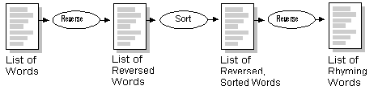
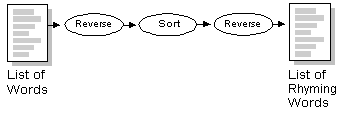
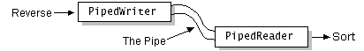

Feedback Form
|
|
Start of Tutorial > Start of Trail > Start of Lesson |
Search
Feedback Form |
Pipes are used to channel the output from one thread into the input of another.PipedReaderand
PipedWriterPipedInputStreamPipedOutputStreamConsider a class that implements various string manipulation utilities, such as sorting and reversing text. It would be nice if the output of one of these methods could be used as the input for another so that you could string a series of method calls together to perform a higher-order function. For example, you could reverse each word in a list, sort the words, and then reverse each word again to create a list of rhyming words.
Without pipe streams, the program would have to store the results somewhere (such as in a file or in memory) between each step, as shown here:
 With pipe streams, the output from one method could be piped into the next, as shown in this figure: Let's look at a program, calledRhymingWords, that implements what's represented in the previous figure. This program uses
PipedReaderandPipedWriterto connect the input and output of itsreverseandsortmethods to create a list of rhyming words. Several classes make up this program.First, let's look at the calling sequence of the
reverseandsortmethods from themainmethod:The innermost call toFileReader words = new FileReader("words.txt"); Reader rhymingWords = reverse(sort(reverse(words)));reversetakes aFileReader, which is opened on the filewords.txtreverseis passed tosort, whose return value is then passed to another call toreverse.Let's look at the
reversemethod; thesortmethod is similar and you will understand it once you understandreverse.The statements in boldface create both ends of a pipe--apublic static Reader reverse(Reader src) throws IOException { BufferedReader in = new BufferedReader(source); PipedWriter pipeOut = new PipedWriter(); PipedReader pipeIn = new PipedReader(pipeOut); PrintWriter out = new PrintWriter(pipeOut); new ReverseThread(out, in).start(); return pipeIn; }PipedWriterand aPipedReader-- and connect them by constructing thePipedReader"on" thePipedWriter. Whatever is written to thePipedWritercan be read from thePipedReader. The connection forms a pipe, as illustrated here: Thereversemethod starts aReverseThreadPipedWriterand then returns thePipedReaderto the caller. The caller then arranges for a sorting thread to read from it. Thesortmethod is exactly the same, except that it creates and starts aSortThread
|
|
Start of Tutorial > Start of Trail > Start of Lesson |
Search
Feedback Form |
Copyright 1995-2004 Sun Microsystems, Inc. All rights reserved.